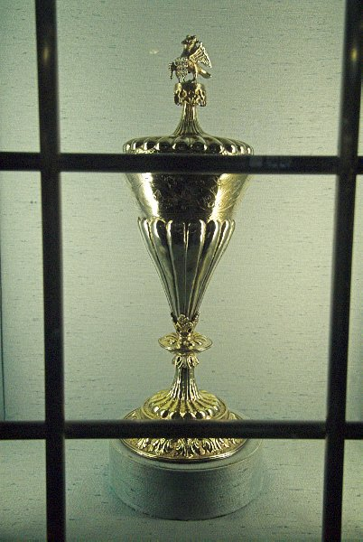

This is Anne Boleyn's Cup from the 1500's, which was orginally given to her Daughter Elizabeth I, from her, given to Dr Masters, who lived near the area and so gifted it to St John's Baptist Church in the centre of Cirencester, and has been there ever since, perfectly preserved.
